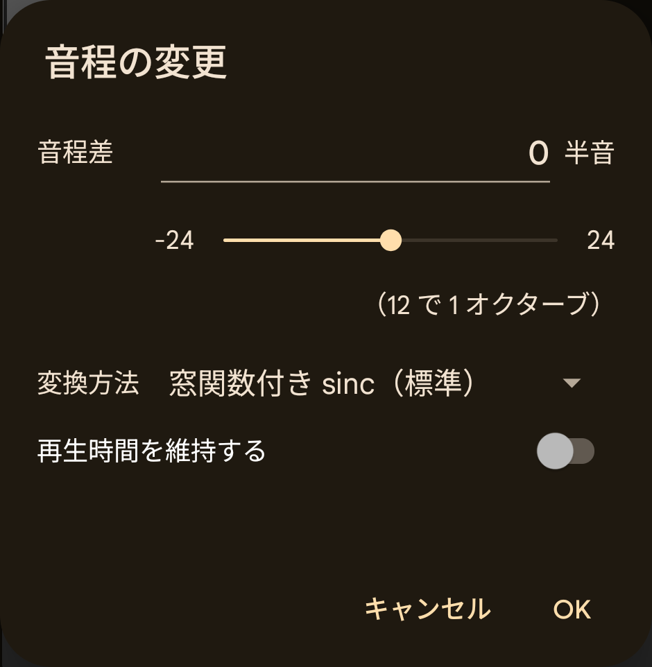
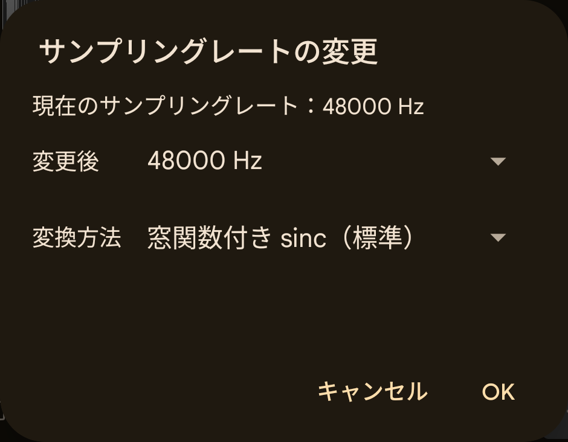
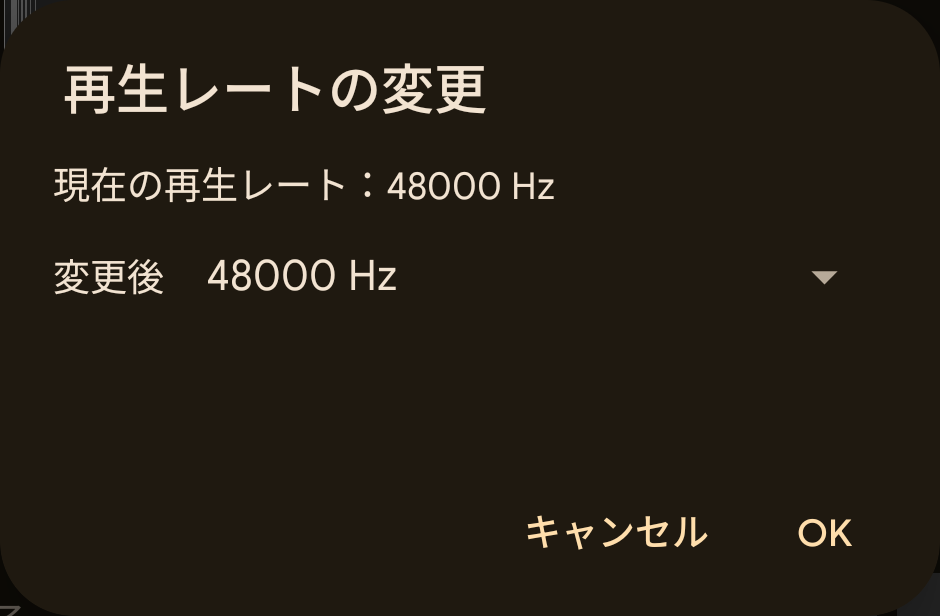
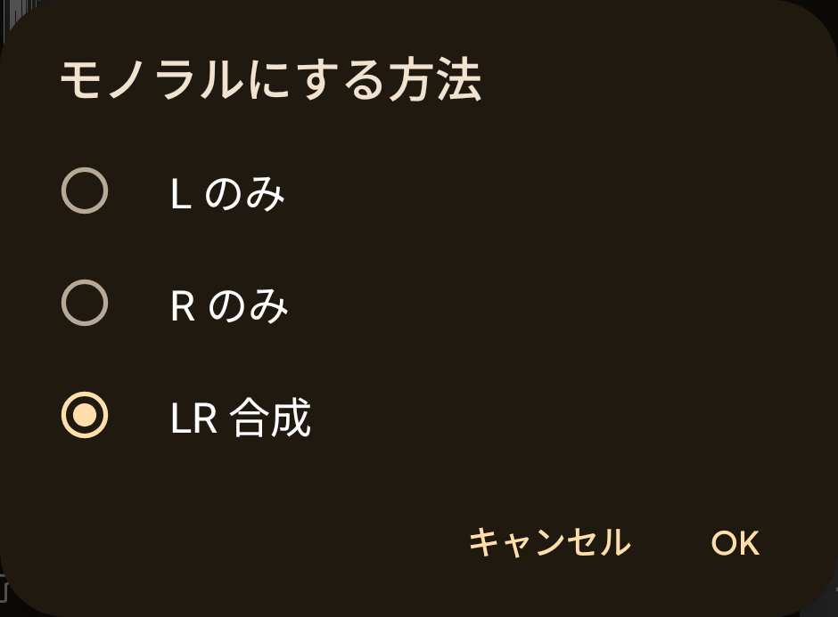

「全体の加工」グループ
選択範囲に関係なく、音声データ全体に対して音程・サンプリングレート・再生レート・チャンネル数を変換するコマンド群です。
機能比較
| コマンド | 音程 | サンプリングレート | サンプルデータ | L / R スイッチ |
|---|---|---|---|---|
| 音程の変更 | 変わる | 変わらない | 変わる | 「再生時間を維持する」オン時のみ有効 |
| サンプリングレートの変更 | 変わらない | 変わる | 変わる | 対象外（常に全チャンネル） |
| 再生レートの変更 | 変わる | 変わる | 変わらない | 対象外（常に全チャンネル） |
| チャンネル数の変更 | 変わらない | 変わらない | 変わる | 対象外（常に全チャンネル） |
音程の変更
音声全体の音程（ピッチ）を半音単位で変更します。

- 音程差：
-24〜+24半音（初期値0、小数入力可。1 で半音、12 で 1 オクターブ）。 - 変換方法：リサンプリングに使用するアルゴリズムを選択します（変換方法（サンプリングレート変換アルゴリズム）を参照）。
- 再生時間を維持する（スイッチ、初期値オフ）：
- オフ：タイムストレッチを行わないため、音程を上げると再生時間が短く、下げると長くなります（-24 で 4 倍、+24 で 1/4）。
- オン：WSOLA 方式のタイムストレッチとリサンプリングを組み合わせ、再生時間を保ったまま音程を変更します（ステレオ時は L / R スイッチで片チャンネルのみ加工できます）。
サンプリングレートの変更
音程と再生時間を維持したまま、音声データのサンプリングレート（Hz）を変換します。

- ダイアログには「現在のサンプリングレート」が表示され、「変更後」のドロップダウンから端末のハードウェアが再生対応しているレート（4000〜192000 Hz など）を選べます。
- 「変換方法」で補間アルゴリズムを選択します。
- MP3 で書き出したいのに現在のサンプリングレートが非対応の場合や、端末で再生できないサンプリングレートだった場合の変換にも使えます。
再生レートの変更
サンプルデータ自体は一切書き換えず、サンプリングレートの設定値だけを変更します。

- レートを上げると音程が高く再生時間が短くなり、下げると音程が低く再生時間が長くなります。
- リサンプリングを行わないため、処理は一瞬で完了します。
チャンネル数の変更
モノラルとステレオを相互に変換します。

- モノラル → ステレオ：ダイアログを出さず即座に実行し、L と R に同じ波形を複製します。
- ステレオ → モノラル：変換方法を選ぶダイアログが表示されます。
- L のみ：L チャンネルだけを残します。
- R のみ：R チャンネルだけを残します。
- LR 合成（初期値）：L と R を足して 2 で割ります。
変換方法（サンプリングレート変換アルゴリズム）
「音程の変更」「サンプリングレートの変更」「音の追加」で共通して選択できる 5 種類のアルゴリズムです。
| アルゴリズム | 品質 | 速度 | 特徴 |
|---|---|---|---|
| 最近傍 | 低い | 最速 | 最も近いサンプル値をそのまま使用します。 |
| 線形補間 | やや低い | 速い | 隣り合う 2 サンプルを直線で結びます。 |
| 3 次補間（Catmull-Rom） | 中 | やや速い | 前後 4 サンプルから曲線補間します。 |
| 窓関数付き sinc（標準） | 高い | 遅い | 初期選択。カイザー窓（32 タップ）の sinc 補間で折り返し雑音を抑えます。 |
| 窓関数付き sinc（高品質） | 最高 | 最も遅い | カイザー窓（128 タップ）でさらに高精度に補間します。 |
長さの上限と選択範囲：変換後の長さが上限を超える場合は、ダイアログ内にあらかじめ警告が表示されます。そのまま実行すると上限を超えた末尾が切り捨てられます。また、サンプル数が変わる変換では、開始位置・終了位置も音声の同じ箇所を指すように比率で調整されます。